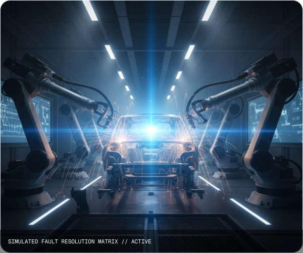

INDUSTRIAL OPERATIONS
THE OPERATIONAL CHALLENGE
Equipment failures cascade across production lines. Operators face split-second decisions with incomplete data from siloed monitoring systems. Shift handovers lose critical context, and the same failures repeat across sites.
THE DECISIO APPROACH
Decisio brings operational signals, historical context, and safety constraints into one decision brief, giving operators the information they need before acting.
43%
Reduction in repeat failures
2.1x
Faster incident resolution
100%
Audit trail compliance